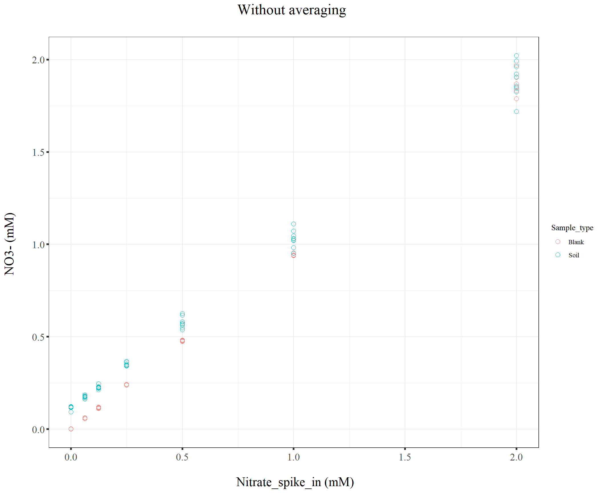

211020_Griess_pipet_confirm
KiseokUchicago
2021-10-21
Last updated: 2021-10-21
Checks: 7 0
Knit directory: Denit_visualization_R/
This reproducible R Markdown analysis was created with workflowr (version 1.6.2). The Checks tab describes the reproducibility checks that were applied when the results were created. The Past versions tab lists the development history.
Great! Since the R Markdown file has been committed to the Git repository, you know the exact version of the code that produced these results.
Great job! The global environment was empty. Objects defined in the global environment can affect the analysis in your R Markdown file in unknown ways. For reproduciblity it’s best to always run the code in an empty environment.
The command set.seed(20210924) was run prior to running the code in the R Markdown file. Setting a seed ensures that any results that rely on randomness, e.g. subsampling or permutations, are reproducible.
Great job! Recording the operating system, R version, and package versions is critical for reproducibility.
Nice! There were no cached chunks for this analysis, so you can be confident that you successfully produced the results during this run.
Great job! Using relative paths to the files within your workflowr project makes it easier to run your code on other machines.
Great! You are using Git for version control. Tracking code development and connecting the code version to the results is critical for reproducibility.
The results in this page were generated with repository version 1015537. See the Past versions tab to see a history of the changes made to the R Markdown and HTML files.
Note that you need to be careful to ensure that all relevant files for the analysis have been committed to Git prior to generating the results (you can use wflow_publish or wflow_git_commit). workflowr only checks the R Markdown file, but you know if there are other scripts or data files that it depends on. Below is the status of the Git repository when the results were generated:
Ignored files:
Ignored: .Rhistory
Ignored: .Rproj.user/
Ignored: Figure_211014_external_lab/
Untracked files:
Untracked: 210928_pH.pdf
Untracked: 211014_TN.pdf
Untracked: 211014_drying_oven_TOC.pdf
Untracked: 211014_toc_lab.pdf
Untracked: 211020_df_full_innate.xlsx
Untracked: Figure_210911_TOC/
Untracked: Figure_210924/
Untracked: Figure_210927_TOC/
Untracked: Figure_210929/
Untracked: Figure_211006/
Untracked: Figure_211007/
Untracked: Figure_211008/
Untracked: Figure_211013/
Untracked: data/210911_TOC_sample_plate1.xlsx
Untracked: data/210922_Griess_sample_plate1-investigating.xlsx
Untracked: data/210922_Griess_sample_plate1.xlsx
Untracked: data/210927_TOC_sample_plate1_100ul.xlsx
Untracked: data/210927_TOC_sample_plate1_10ul.xlsx
Untracked: data/210928_Griess_sample_plate1.xlsx
Untracked: data/211005_Griess_sample_plate1.xlsx
Untracked: data/211007_Griess_blank_plate1.xlsx
Untracked: data/211007_Griess_blank_plate2.xlsx
Untracked: data/211008_Griess_blank_plate0.xlsx
Untracked: data/211008_Griess_blank_plate1.xlsx
Untracked: data/211017_Griess_plate0.xlsx
Untracked: data/211017_Griess_plate1.xlsx
Untracked: data/211017_Griess_plate2.xlsx
Untracked: data/211017_Griess_plate3.xlsx
Untracked: data/211017_Griess_plate4.xlsx
Untracked: data/211017_Griess_plate5.xlsx
Untracked: data/211017_Griess_plate6.xlsx
Untracked: data/211017_Griess_plate7.xlsx
Untracked: data/211017_Griess_plate8.xlsx
Untracked: data/211019_Griess_plate1.xlsx
Untracked: data/211020_Griess_plate0.xlsx
Untracked: data/211020_Griess_plate1.xlsx
Untracked: data/211020_df_full_innate.xlsx
Untracked: data/TOC_TN_measurement_2_labs_211014.xlsx
Untracked: data/dry_weight_curve(9.5.21).xlsx
Untracked: data/pH_data(9.14.21).xlsx
Untracked: data/pH_data(9.28.21).xlsx
Untracked: df_NO2NO3.xlsx
Note that any generated files, e.g. HTML, png, CSS, etc., are not included in this status report because it is ok for generated content to have uncommitted changes.
These are the previous versions of the repository in which changes were made to the R Markdown (analysis/211020_Griess_pipet_confirm.Rmd) and HTML (docs/211020_Griess_pipet_confirm.html) files. If you’ve configured a remote Git repository (see ?wflow_git_remote), click on the hyperlinks in the table below to view the files as they were in that past version.
| File | Version | Author | Date | Message |
|---|---|---|---|---|
| Rmd | 1015537 | KiseokUchicago | 2021-10-21 | wflow_publish("analysis/*.Rmd") |
| html | 9275f67 | KiseokUchicago | 2021-10-21 | Build site. |
| Rmd | a2e06a9 | KiseokUchicago | 2021-10-21 | all |
Slurry extraction pipet confirmation (Griess assay)
Researcher: Kiseok Lee
Experiment Date: 10/20/21
Analysis Date: 10/21/21 Lab: Seppe Kuehn
# libraries
library(dplyr)
library(ggplot2)
library(RColorBrewer)
library(vegan)
library(tidyverse)
library(magrittr)
library(readxl)
library(reshape2)
library(gtools)
library(devtools)
library(openxlsx)
library(ape)
library(stringr)
library(tidyr)
library(ggrepel)
library(ggpubr)
## theme for ggplot
mytheme <- theme_bw() +
theme(text = element_text(family="serif")) +
theme(plot.title = element_text(size = 19,hjust = 0.5, family="serif")) +
theme(axis.title.x = element_text(size = 17,hjust = 0.5, family="serif")) +
theme(axis.title.y = element_text(size = 17,hjust = 0.5, family="serif")) +
theme(axis.text.x = element_text(hjust = 0.5, vjust=0.3,size=13, family="serif"))+
theme(axis.text.y = element_text(size=10, family="serif"))+
theme(panel.grid.major = element_blank()) +
theme(panel.grid.minor = element_blank(),panel.background=element_blank(),panel.border=element_blank(),plot.background=element_blank()) +
theme(axis.ticks = element_line(size = 1.1))
mytheme_2d <- theme_bw() +
theme(text = element_text(family="serif")) +
theme(plot.title = element_text(size = 19,hjust = 0.5, family="serif")) +
theme(axis.title.x = element_text(size = 17,hjust = 0.5, family="serif")) +
theme(axis.title.y = element_text(size = 17,hjust = 0.5, family="serif")) +
theme(axis.text.x = element_text(hjust = 0.5, vjust=0.3,size=13, family="serif"))+
theme(axis.text.y = element_text(size=13, family="serif"))+
# theme(panel.grid.major = element_blank()) +
# theme(panel.grid.minor = element_blank(),panel.background=element_blank(),plot.background=element_blank()) +
theme(axis.ticks = element_line(size = 1.1))
# color collection
my_color_collection <- c(
"#CBD588", "#5F7FC7", "orange", "#AD6F3B", "#673770",
"#D14285", "#652926", "#C84248", "#8569D5", "#5E738F",
"#D1A33D", "#8A7C64", "#599861","#616163", "#FFCDB2",
"#6D9F71", "#242F40",
"#CCA43B", "#F92A82", "#ED7B84", "#7EB77F",
"#DEC4A1", "#E5D1D0", '#0E8482', '#C9DAEA', '#337357',
'#95C623', '#E55812', '#04471C', '#F2D7EE', '#D3BCC0',
'#A5668B', '#69306D', '#0E103D', '#1A535C', '#4ECDC4',
'#F7FFF7', '#FF6B6B', '#FFE66D', '#6699CC', '#FFF275',
'#FF8C42', '#FF3C38', '#A23E48', '#000000', '#CF5C36',
'#EEE5E9', '#7C7C7C', '#EFC88B', '#2E5266', '#6E8898',
'#9FB1BC', '#D3D0CB', '#E2C044', '#5BC0EB', '#FDE74C',
'#9BC53D', '#E55934', '#FA7921', "#CD9BCD", "#508578", "#DA5724")
# for git push, use this instead of using wflow_git_push()
# git push -u origin master (in the Git app / in the working directory)1. Import data table from python code
# import file
df_p0 <- openxlsx::read.xlsx("data/211020_Griess_plate0.xlsx")
df_p1 <- openxlsx::read.xlsx("data/211020_Griess_plate1.xlsx")
head(df_p0) Well Sample Extraction_method Extraction_ul Nitrate_input
1 A10 Blank_4mM_0.5_1_1.5_50ul 0.5_1_1.5 50 4
2 A11 Blank_4mM_0.5_1_1.5_50ul 0.5_1_1.5 50 4
3 A12 Blank_4mM_0.5_1_1.5_50ul 0.5_1_1.5 50 4
4 B10 Blank_2mM_0.5_1_1.5_50ul 0.5_1_1.5 50 2
5 B11 Blank_2mM_0.5_1_1.5_50ul 0.5_1_1.5 50 2
6 B12 Blank_2mM_0.5_1_1.5_50ul 0.5_1_1.5 50 2
Sample_type Pipet Plate NO2_OD540 NO2NO3_OD540 NO2_mM NO2NO3_mM
1 Blank 300pipet P0 0.00430 3.16110 0.007512610 3.626961
2 Blank 300pipet P0 0.00405 3.12940 0.007402341 3.568737
3 Blank 300pipet P0 0.00425 3.21460 0.007490556 3.727945
4 Blank 300pipet P0 0.00405 1.93435 0.007402341 1.875481
5 Blank 300pipet P0 0.00510 1.96505 0.007865488 1.911244
6 Blank 300pipet P0 0.00555 1.91925 0.008063993 1.857991
NO3_mM
1 3.619448
2 3.561335
3 3.720454
4 1.868079
5 1.903379
6 1.849927colnames(df_p0) [1] "Well" "Sample" "Extraction_method"
[4] "Extraction_ul" "Nitrate_input" "Sample_type"
[7] "Pipet" "Plate" "NO2_OD540"
[10] "NO2NO3_OD540" "NO2_mM" "NO2NO3_mM"
[13] "NO3_mM" dim(df_p0)[1] 24 13head(df_p1) Well Sample Extraction_method Extraction_ul Nitrate_input
1 A01 Spike_4mM_100ul_300pipet 0.5_1_1.5 100 4
2 A02 Spike_4mM_100ul_300pipet 0.5_1_1.5 100 4
3 A03 Spike_4mM_100ul_300pipet 0.5_1_1.5 100 4
4 A04 Spike_4mM_100ul_1200pipet 0.5_1_1.5 100 4
5 A05 Spike_4mM_100ul_1200pipet 0.5_1_1.5 100 4
6 A06 Spike_4mM_100ul_1200pipet 0.5_1_1.5 100 4
Sample_type Pipet Plate NO2_OD540 NO2NO3_OD540 NO2_mM NO2NO3_mM
1 Soil 300pipet P1 0.00705 3.18355 0.008725730 3.668906
2 Soil 300pipet P1 0.00795 3.00535 0.009122813 3.351054
3 Soil 300pipet P1 0.00830 3.05030 0.009277242 3.428180
4 Soil 1200pipet P1 0.00810 2.98320 0.009188996 3.313723
5 Soil 1200pipet P1 0.00825 2.96165 0.009255181 3.277812
6 Soil 1200pipet P1 0.00975 3.07680 0.009917071 3.474554
NO3_mM
1 3.660180
2 3.341931
3 3.418903
4 3.304534
5 3.268557
6 3.464637colnames(df_p1) [1] "Well" "Sample" "Extraction_method"
[4] "Extraction_ul" "Nitrate_input" "Sample_type"
[7] "Pipet" "Plate" "NO2_OD540"
[10] "NO2NO3_OD540" "NO2_mM" "NO2NO3_mM"
[13] "NO3_mM" dim(df_p1)[1] 96 13# remove wells
# df_p1 %<>% filter(!(Well %in% c("B02","H04")))
# dim(df_p1)
# bind two dataframe
df_p <- rbind(df_p0, df_p1)
dim(df_p)[1] 120 13# remove NA
dim(df_p)[1] 120 13df_p <- na.omit(df_p)
dim(df_p)[1] 120 13df_p Well Sample Extraction_method Extraction_ul
1 A10 Blank_4mM_0.5_1_1.5_50ul 0.5_1_1.5 50
2 A11 Blank_4mM_0.5_1_1.5_50ul 0.5_1_1.5 50
3 A12 Blank_4mM_0.5_1_1.5_50ul 0.5_1_1.5 50
4 B10 Blank_2mM_0.5_1_1.5_50ul 0.5_1_1.5 50
5 B11 Blank_2mM_0.5_1_1.5_50ul 0.5_1_1.5 50
6 B12 Blank_2mM_0.5_1_1.5_50ul 0.5_1_1.5 50
7 C10 Blank_1mM_0.5_1_1.5_50ul 0.5_1_1.5 50
8 C11 Blank_1mM_0.5_1_1.5_50ul 0.5_1_1.5 50
9 C12 Blank_1mM_0.5_1_1.5_50ul 0.5_1_1.5 50
10 D10 Blank_0.5mM_0.5_1_1.5_50ul 0.5_1_1.5 50
11 D11 Blank_0.5mM_0.5_1_1.5_50ul 0.5_1_1.5 50
12 D12 Blank_0.5mM_0.5_1_1.5_50ul 0.5_1_1.5 50
13 E10 Blank_0.25mM_0.5_1_1.5_50ul 0.5_1_1.5 50
14 E11 Blank_0.25mM_0.5_1_1.5_50ul 0.5_1_1.5 50
15 E12 Blank_0.25mM_0.5_1_1.5_50ul 0.5_1_1.5 50
16 F10 Blank_0.125mM_0.5_1_1.5_50ul 0.5_1_1.5 50
17 F11 Blank_0.125mM_0.5_1_1.5_50ul 0.5_1_1.5 50
18 F12 Blank_0.125mM_0.5_1_1.5_50ul 0.5_1_1.5 50
19 G10 Blank_0.0625mM_0.5_1_1.5_50ul 0.5_1_1.5 50
20 G11 Blank_0.0625mM_0.5_1_1.5_50ul 0.5_1_1.5 50
21 G12 Blank_0.0625mM_0.5_1_1.5_50ul 0.5_1_1.5 50
22 H10 Blank_0mM_0.5_1_1.5_50ul 0.5_1_1.5 50
23 H11 Blank_0mM_0.5_1_1.5_50ul 0.5_1_1.5 50
24 H12 Blank_0mM_0.5_1_1.5_50ul 0.5_1_1.5 50
25 A01 Spike_4mM_100ul_300pipet 0.5_1_1.5 100
26 A02 Spike_4mM_100ul_300pipet 0.5_1_1.5 100
27 A03 Spike_4mM_100ul_300pipet 0.5_1_1.5 100
28 A04 Spike_4mM_100ul_1200pipet 0.5_1_1.5 100
29 A05 Spike_4mM_100ul_1200pipet 0.5_1_1.5 100
30 A06 Spike_4mM_100ul_1200pipet 0.5_1_1.5 100
31 A07 Spike_4mM_50ul_300pipet 0.5_1_1.5 50
32 A08 Spike_4mM_50ul_300pipet 0.5_1_1.5 50
33 A09 Spike_4mM_50ul_300pipet 0.5_1_1.5 50
34 A10 Blank_4mM_100ul_300pipet 0.5_1_1.5 100
35 A11 Blank_4mM_100ul_300pipet 0.5_1_1.5 100
36 A12 Blank_4mM_100ul_300pipet 0.5_1_1.5 100
37 B01 Spike_2mM_100ul_300pipet 0.5_1_1.5 100
38 B02 Spike_2mM_100ul_300pipet 0.5_1_1.5 100
39 B03 Spike_2mM_100ul_300pipet 0.5_1_1.5 100
40 B04 Spike_2mM_100ul_1200pipet 0.5_1_1.5 100
41 B05 Spike_2mM_100ul_1200pipet 0.5_1_1.5 100
42 B06 Spike_2mM_100ul_1200pipet 0.5_1_1.5 100
43 B07 Spike_2mM_50ul_300pipet 0.5_1_1.5 50
44 B08 Spike_2mM_50ul_300pipet 0.5_1_1.5 50
45 B09 Spike_2mM_50ul_300pipet 0.5_1_1.5 50
46 B10 Blank_2mM_100ul_300pipet 0.5_1_1.5 100
47 B11 Blank_2mM_100ul_300pipet 0.5_1_1.5 100
48 B12 Blank_2mM_100ul_300pipet 0.5_1_1.5 100
49 C01 Spike_1mM_100ul_300pipet 0.5_1_1.5 100
50 C02 Spike_1mM_100ul_300pipet 0.5_1_1.5 100
51 C03 Spike_1mM_100ul_300pipet 0.5_1_1.5 100
52 C04 Spike_1mM_100ul_1200pipet 0.5_1_1.5 100
53 C05 Spike_1mM_100ul_1200pipet 0.5_1_1.5 100
54 C06 Spike_1mM_100ul_1200pipet 0.5_1_1.5 100
55 C07 Spike_1mM_50ul_300pipet 0.5_1_1.5 50
56 C08 Spike_1mM_50ul_300pipet 0.5_1_1.5 50
57 C09 Spike_1mM_50ul_300pipet 0.5_1_1.5 50
58 C10 Blank_1mM_100ul_300pipet 0.5_1_1.5 100
59 C11 Blank_1mM_100ul_300pipet 0.5_1_1.5 100
60 C12 Blank_1mM_100ul_300pipet 0.5_1_1.5 100
61 D01 Spike_0.5mM_100ul_300pipet 0.5_1_1.5 100
62 D02 Spike_0.5mM_100ul_300pipet 0.5_1_1.5 100
63 D03 Spike_0.5mM_100ul_300pipet 0.5_1_1.5 100
64 D04 Spike_0.5mM_100ul_1200pipet 0.5_1_1.5 100
65 D05 Spike_0.5mM_100ul_1200pipet 0.5_1_1.5 100
66 D06 Spike_0.5mM_100ul_1200pipet 0.5_1_1.5 100
67 D07 Spike_0.5mM_50ul_300pipet 0.5_1_1.5 50
68 D08 Spike_0.5mM_50ul_300pipet 0.5_1_1.5 50
69 D09 Spike_0.5mM_50ul_300pipet 0.5_1_1.5 50
70 D10 Blank_0.5mM_100ul_300pipet 0.5_1_1.5 100
71 D11 Blank_0.5mM_100ul_300pipet 0.5_1_1.5 100
72 D12 Blank_0.5mM_100ul_300pipet 0.5_1_1.5 100
73 E01 Spike_0.25mM_100ul_300pipet 0.5_1_1.5 100
74 E02 Spike_0.25mM_100ul_300pipet 0.5_1_1.5 100
75 E03 Spike_0.25mM_100ul_300pipet 0.5_1_1.5 100
76 E04 Spike_0.25mM_100ul_1200pipet 0.5_1_1.5 100
77 E05 Spike_0.25mM_100ul_1200pipet 0.5_1_1.5 100
78 E06 Spike_0.25mM_100ul_1200pipet 0.5_1_1.5 100
79 E07 Spike_0.25mM_50ul_300pipet 0.5_1_1.5 50
80 E08 Spike_0.25mM_50ul_300pipet 0.5_1_1.5 50
81 E09 Spike_0.25mM_50ul_300pipet 0.5_1_1.5 50
82 E10 Blank_0.25mM_100ul_300pipet 0.5_1_1.5 100
83 E11 Blank_0.25mM_100ul_300pipet 0.5_1_1.5 100
84 E12 Blank_0.25mM_100ul_300pipet 0.5_1_1.5 100
85 F01 Spike_0.125mM_100ul_300pipet 0.5_1_1.5 100
86 F02 Spike_0.125mM_100ul_300pipet 0.5_1_1.5 100
87 F03 Spike_0.125mM_100ul_300pipet 0.5_1_1.5 100
88 F04 Spike_0.125mM_100ul_1200pipet 0.5_1_1.5 100
89 F05 Spike_0.125mM_100ul_1200pipet 0.5_1_1.5 100
90 F06 Spike_0.125mM_100ul_1200pipet 0.5_1_1.5 100
91 F07 Spike_0.125mM_50ul_300pipet 0.5_1_1.5 50
92 F08 Spike_0.125mM_50ul_300pipet 0.5_1_1.5 50
93 F09 Spike_0.125mM_50ul_300pipet 0.5_1_1.5 50
94 F10 Blank_0.125mM_100ul_300pipet 0.5_1_1.5 100
95 F11 Blank_0.125mM_100ul_300pipet 0.5_1_1.5 100
96 F12 Blank_0.125mM_100ul_300pipet 0.5_1_1.5 100
97 G01 Spike_0.0625mM_100ul_300pipet 0.5_1_1.5 100
98 G02 Spike_0.0625mM_100ul_300pipet 0.5_1_1.5 100
99 G03 Spike_0.0625mM_100ul_300pipet 0.5_1_1.5 100
100 G04 Spike_0.0625mM_100ul_1200pipet 0.5_1_1.5 100
101 G05 Spike_0.0625mM_100ul_1200pipet 0.5_1_1.5 100
102 G06 Spike_0.0625mM_100ul_1200pipet 0.5_1_1.5 100
103 G07 Spike_0.0625mM_50ul_300pipet 0.5_1_1.5 50
104 G08 Spike_0.0625mM_50ul_300pipet 0.5_1_1.5 50
105 G09 Spike_0.0625mM_50ul_300pipet 0.5_1_1.5 50
106 G10 Blank_0.0625mM_100ul_300pipet 0.5_1_1.5 100
107 G11 Blank_0.0625mM_100ul_300pipet 0.5_1_1.5 100
108 G12 Blank_0.0625mM_100ul_300pipet 0.5_1_1.5 100
109 H01 Spike_0mM_100ul_300pipet 0.5_1_1.5 100
110 H02 Spike_0mM_100ul_300pipet 0.5_1_1.5 100
111 H03 Spike_0mM_100ul_300pipet 0.5_1_1.5 100
112 H04 Spike_0mM_100ul_1200pipet 0.5_1_1.5 100
113 H05 Spike_0mM_100ul_1200pipet 0.5_1_1.5 100
114 H06 Spike_0mM_100ul_1200pipet 0.5_1_1.5 100
115 H07 Spike_0mM_50ul_300pipet 0.5_1_1.5 50
116 H08 Spike_0mM_50ul_300pipet 0.5_1_1.5 50
117 H09 Spike_0mM_50ul_300pipet 0.5_1_1.5 50
118 H10 Blank_0mM_100ul_300pipet 0.5_1_1.5 100
119 H11 Blank_0mM_100ul_300pipet 0.5_1_1.5 100
120 H12 Blank_0mM_100ul_300pipet 0.5_1_1.5 100
Nitrate_input Sample_type Pipet Plate NO2_OD540 NO2NO3_OD540
1 4.0000 Blank 300pipet P0 0.00430 3.16110
2 4.0000 Blank 300pipet P0 0.00405 3.12940
3 4.0000 Blank 300pipet P0 0.00425 3.21460
4 2.0000 Blank 300pipet P0 0.00405 1.93435
5 2.0000 Blank 300pipet P0 0.00510 1.96505
6 2.0000 Blank 300pipet P0 0.00555 1.91925
7 1.0000 Blank 300pipet P0 0.00585 1.05525
8 1.0000 Blank 300pipet P0 0.00650 1.06895
9 1.0000 Blank 300pipet P0 0.00620 1.05730
10 0.5000 Blank 300pipet P0 0.00520 0.56245
11 0.5000 Blank 300pipet P0 0.00550 0.55915
12 0.5000 Blank 300pipet P0 0.00670 0.56155
13 0.2500 Blank 300pipet P0 0.00480 0.28475
14 0.2500 Blank 300pipet P0 0.00500 0.28685
15 0.2500 Blank 300pipet P0 0.00600 0.28810
16 0.1250 Blank 300pipet P0 0.00690 0.13845
17 0.1250 Blank 300pipet P0 0.00345 0.13800
18 0.1250 Blank 300pipet P0 0.00685 0.14365
19 0.0625 Blank 300pipet P0 0.00300 0.06895
20 0.0625 Blank 300pipet P0 0.00390 0.07385
21 0.0625 Blank 300pipet P0 0.00420 0.07330
22 0.0000 Blank 300pipet P0 0.00390 0.00000
23 0.0000 Blank 300pipet P0 0.00425 0.00000
24 0.0000 Blank 300pipet P0 0.00425 0.00000
25 4.0000 Soil 300pipet P1 0.00705 3.18355
26 4.0000 Soil 300pipet P1 0.00795 3.00535
27 4.0000 Soil 300pipet P1 0.00830 3.05030
28 4.0000 Soil 1200pipet P1 0.00810 2.98320
29 4.0000 Soil 1200pipet P1 0.00825 2.96165
30 4.0000 Soil 1200pipet P1 0.00975 3.07680
31 4.0000 Soil 300pipet P1 0.00770 3.01200
32 4.0000 Soil 300pipet P1 0.00895 2.87385
33 4.0000 Soil 300pipet P1 0.00885 2.96915
34 4.0000 Blank 300pipet P1 0.00630 2.88400
35 4.0000 Blank 300pipet P1 0.00700 3.10220
36 4.0000 Blank 300pipet P1 0.00845 2.98435
37 2.0000 Soil 300pipet P1 0.00720 1.96780
38 2.0000 Soil 300pipet P1 0.00885 1.89900
39 2.0000 Soil 300pipet P1 0.00965 1.98120
40 2.0000 Soil 1200pipet P1 0.00750 2.04080
41 2.0000 Soil 1200pipet P1 0.00660 2.01445
42 2.0000 Soil 1200pipet P1 0.00825 2.06590
43 2.0000 Soil 300pipet P1 0.00670 1.91585
44 2.0000 Soil 300pipet P1 0.00785 1.80550
45 2.0000 Soil 300pipet P1 0.00980 1.92565
46 2.0000 Blank 300pipet P1 0.00425 1.90215
47 2.0000 Blank 300pipet P1 0.00615 2.02140
48 2.0000 Blank 300pipet P1 0.00615 1.86525
49 1.0000 Soil 300pipet P1 0.01025 1.14170
50 1.0000 Soil 300pipet P1 0.01080 1.14070
51 1.0000 Soil 300pipet P1 0.00940 1.15175
52 1.0000 Soil 1200pipet P1 0.00825 1.14995
53 1.0000 Soil 1200pipet P1 0.00970 1.19195
54 1.0000 Soil 1200pipet P1 0.01140 1.23145
55 1.0000 Soil 300pipet P1 0.00925 1.16550
56 1.0000 Soil 300pipet P1 0.00935 1.06965
57 1.0000 Soil 300pipet P1 0.01185 1.10215
58 1.0000 Blank 300pipet P1 0.00840 1.05810
59 1.0000 Blank 300pipet P1 0.00760 1.05920
60 1.0000 Blank 300pipet P1 0.00935 1.05715
61 0.5000 Soil 300pipet P1 0.00900 0.66395
62 0.5000 Soil 300pipet P1 0.00850 0.65320
63 0.5000 Soil 300pipet P1 0.00950 0.67500
64 0.5000 Soil 1200pipet P1 0.00855 0.71265
65 0.5000 Soil 1200pipet P1 0.00850 0.66150
66 0.5000 Soil 1200pipet P1 0.00830 0.72365
67 0.5000 Soil 300pipet P1 0.00710 0.62675
68 0.5000 Soil 300pipet P1 0.01115 0.64055
69 0.5000 Soil 300pipet P1 0.00970 0.66560
70 0.5000 Blank 300pipet P1 0.00500 0.56250
71 0.5000 Blank 300pipet P1 0.00430 0.55445
72 0.5000 Blank 300pipet P1 0.00455 0.55680
73 0.2500 Soil 300pipet P1 0.00955 0.40945
74 0.2500 Soil 300pipet P1 0.00955 0.41355
75 0.2500 Soil 300pipet P1 0.00885 0.41885
76 0.2500 Soil 1200pipet P1 0.00940 0.43055
77 0.2500 Soil 1200pipet P1 0.01140 0.41005
78 0.2500 Soil 1200pipet P1 0.00955 0.43515
79 0.2500 Soil 300pipet P1 0.00885 0.41360
80 0.2500 Soil 300pipet P1 0.01075 0.40775
81 0.2500 Soil 300pipet P1 0.00870 0.41830
82 0.2500 Blank 300pipet P1 0.00620 0.29040
83 0.2500 Blank 300pipet P1 0.00840 0.28945
84 0.2500 Blank 300pipet P1 0.00675 0.28700
85 0.1250 Soil 300pipet P1 0.01025 0.27165
86 0.1250 Soil 300pipet P1 0.01120 0.27470
87 0.1250 Soil 300pipet P1 0.00935 0.27845
88 0.1250 Soil 1200pipet P1 0.00865 0.26685
89 0.1250 Soil 1200pipet P1 0.00955 0.27255
90 0.1250 Soil 1200pipet P1 0.01020 0.29665
91 0.1250 Soil 300pipet P1 0.01010 0.25900
92 0.1250 Soil 300pipet P1 0.01065 0.26950
93 0.1250 Soil 300pipet P1 0.00805 0.27475
94 0.1250 Blank 300pipet P1 0.00405 0.14400
95 0.1250 Blank 300pipet P1 0.00640 0.14690
96 0.1250 Blank 300pipet P1 0.00765 0.14660
97 0.0625 Soil 300pipet P1 0.00940 0.21705
98 0.0625 Soil 300pipet P1 0.00955 0.20685
99 0.0625 Soil 300pipet P1 0.01195 0.21735
100 0.0625 Soil 1200pipet P1 0.00980 0.22020
101 0.0625 Soil 1200pipet P1 0.00850 0.19845
102 0.0625 Soil 1200pipet P1 0.00830 0.22535
103 0.0625 Soil 300pipet P1 0.00845 0.21290
104 0.0625 Soil 300pipet P1 0.00820 0.21145
105 0.0625 Soil 300pipet P1 0.01015 0.21700
106 0.0625 Blank 300pipet P1 0.00350 0.07745
107 0.0625 Blank 300pipet P1 0.00445 0.07455
108 0.0625 Blank 300pipet P1 0.00505 0.07850
109 0.0000 Soil 300pipet P1 0.01025 0.14640
110 0.0000 Soil 300pipet P1 0.01000 0.14890
111 0.0000 Soil 300pipet P1 0.00955 0.14685
112 0.0000 Soil 1200pipet P1 0.01140 0.14600
113 0.0000 Soil 1200pipet P1 0.01080 0.15295
114 0.0000 Soil 1200pipet P1 0.01180 0.15260
115 0.0000 Soil 300pipet P1 0.00800 0.11685
116 0.0000 Soil 300pipet P1 0.01020 0.14720
117 0.0000 Soil 300pipet P1 0.01100 0.15085
118 0.0000 Blank 300pipet P1 0.00455 0.00300
119 0.0000 Blank 300pipet P1 0.00545 0.00615
120 0.0000 Blank 300pipet P1 0.00440 0.00305
NO2_mM NO2NO3_mM NO3_mM
1 0.007512610 3.626960961 3.619448350
2 0.007402341 3.568737226 3.561334886
3 0.007490556 3.727944790 3.720454234
4 0.007402341 1.875481362 1.868079022
5 0.007865488 1.911244205 1.903378717
6 0.008063993 1.857991104 1.849927111
7 0.008196334 0.947385775 0.939189442
8 0.008483083 0.960667831 0.952184748
9 0.008350735 0.949371233 0.941020498
10 0.007909600 0.488931273 0.481021673
11 0.008041936 0.485978024 0.477936088
12 0.008571317 0.488125699 0.479554382
13 0.007733156 0.245246277 0.237513121
14 0.007821377 0.247053718 0.239232341
15 0.008262505 0.248129821 0.239867316
16 0.008659552 0.120577860 0.111918307
17 0.007137704 0.120198123 0.113060419
18 0.008637493 0.124967560 0.116330067
19 0.006939235 0.062192797 0.055253562
20 0.007336180 0.066291936 0.058955756
21 0.007468502 0.065831700 0.058363197
22 0.007336180 0.004784125 0.000000000
23 0.007490556 0.004784125 0.000000000
24 0.007490556 0.004784125 0.000000000
25 0.008725730 3.668905895 3.660180165
26 0.009122813 3.351053627 3.341930814
27 0.009277242 3.428180000 3.418902757
28 0.009188996 3.313723321 3.304534325
29 0.009255181 3.277812491 3.268557310
30 0.009917071 3.474554498 3.464637427
31 0.009012509 3.362346379 3.353333870
32 0.009564052 3.135400662 3.125836610
33 0.009519927 3.290265624 3.280745698
34 0.008394851 3.151559215 3.143164364
35 0.008703671 3.519669295 3.510965625
36 0.009343428 3.315650871 3.306307443
37 0.008791908 1.914461172 1.905669263
38 0.009519927 1.834637386 1.825117459
39 0.009872942 1.930168598 1.920295656
40 0.008924268 2.000687976 1.991763708
41 0.008527200 1.969376576 1.960849377
42 0.009255181 2.030715601 2.021460420
43 0.008571317 1.854061878 1.845490561
44 0.009078691 1.728272234 1.719193543
45 0.009939135 1.865396226 1.855457091
46 0.007490556 1.838262589 1.830772033
47 0.008328678 1.977614378 1.969285700
48 0.008328678 1.795969270 1.787640592
49 0.010137720 1.031733712 1.021595992
50 0.010380445 1.030750663 1.020370218
51 0.009762622 1.041623092 1.031860470
52 0.009255181 1.039850556 1.030595375
53 0.009895006 1.081359333 1.071464327
54 0.010645248 1.120686732 1.110041484
55 0.009696431 1.055182154 1.045485722
56 0.009740559 0.961347323 0.951606765
57 0.010843860 0.992986602 0.982142742
58 0.009321366 0.950146237 0.940824871
59 0.008968388 0.951212042 0.942243654
60 0.009740559 0.949225932 0.939485373
61 0.009586115 0.580479146 0.570893031
62 0.009365490 0.570716862 0.561351372
63 0.009806750 0.590530523 0.580723774
64 0.009387552 0.624905926 0.615518374
65 0.009365490 0.578252850 0.568887360
66 0.009277242 0.634986892 0.625709650
67 0.008747789 0.546764646 0.538016857
68 0.010534912 0.559249513 0.548714602
69 0.009895006 0.581978956 0.572083949
70 0.007821377 0.488976030 0.481154653
71 0.007512610 0.481774362 0.474261752
72 0.007622882 0.483875829 0.476252947
73 0.009828814 0.353487077 0.343658263
74 0.009828814 0.357078022 0.347249208
75 0.009519927 0.361723061 0.352203134
76 0.009762622 0.371989562 0.362226940
77 0.010645248 0.354012451 0.343367203
78 0.009828814 0.376030637 0.366201823
79 0.009519927 0.357121826 0.347601900
80 0.010358378 0.351998758 0.341640380
81 0.009453739 0.361240866 0.351787128
82 0.008350735 0.250110332 0.241759596
83 0.009321366 0.249292219 0.239970853
84 0.008593376 0.247182841 0.238589465
85 0.010137720 0.233982962 0.223845242
86 0.010556979 0.236603543 0.226046564
87 0.009740559 0.239827060 0.230086502
88 0.009431676 0.229860967 0.220429291
89 0.009828814 0.234756135 0.224927321
90 0.010115654 0.255495299 0.245379644
91 0.010071524 0.223125573 0.213054049
92 0.010314246 0.232136319 0.221822074
93 0.009166935 0.236646513 0.227479577
94 0.007402341 0.125263128 0.117860787
95 0.008438967 0.127712645 0.119273679
96 0.008990449 0.127459204 0.118468755
97 0.009762622 0.187252761 0.177490139
98 0.009828814 0.178560917 0.168732103
99 0.010887997 0.187508583 0.176620586
100 0.009939135 0.189939406 0.180000271
101 0.009365490 0.171411816 0.162046326
102 0.009277242 0.194334303 0.185057061
103 0.009343428 0.183714942 0.174371514
104 0.009233119 0.182479300 0.173246181
105 0.010093589 0.187210125 0.177116536
106 0.007159756 0.069305200 0.062145443
107 0.007578773 0.066877739 0.059298966
108 0.007843433 0.070184332 0.062340899
109 0.010137720 0.127290248 0.117152528
110 0.010027394 0.129402512 0.119375118
111 0.009828814 0.127670404 0.117841591
112 0.010645248 0.126952351 0.116307102
113 0.010380445 0.132825854 0.122445409
114 0.010821792 0.132529937 0.121708146
115 0.009144874 0.102375693 0.093230819
116 0.010115654 0.127966097 0.117850443
117 0.010468711 0.131050560 0.120581849
118 0.007622882 0.007271488 0.000000000
119 0.008019880 0.009884237 0.001864357
120 0.007556719 0.007312952 0.000000000# remove 4mM spike ins because it is out of standard curve range
df_p %<>% filter(!(Nitrate_input == 4))
dim(df_p)[1] 105 13# Check
# df_p1 %>% filter(Well =="B02")
# df_p1 %>% filter(Well =="H04")2. Get average and standard deviation
# average and standard deviation
# plot to see
ggplot(df_p, aes(x=Nitrate_input, y=NO3_mM, color=Sample_type, group=Sample_type)) +
geom_point(size=2.5, shape=21) +
# geom_line(size=1)+
scale_fill_brewer(palette='Set2') +
ylab("NO3- (mM) \n") +
xlab("\n Nitrate_spike_in (mM)") +
# scale_y_continuous(breaks = seq(0,0.3,0.05), limits=c(0, 0.3))+
ggtitle("Without averaging \n") +
mytheme_2d
# plot to see
ggplot(df_p0, aes(x=Nitrate_input, y=NO3_mM, color=Sample_type, group=Sample_type)) +
geom_point(size=2.5, shape=21) +
# geom_line(size=1)+
scale_fill_brewer(palette='Set2') +
ylab("NO3- (mM) \n") +
xlab("\n Nitrate_spike_in (mM)") +
# scale_y_continuous(breaks = seq(0,0.3,0.05), limits=c(0, 0.3))+
ggtitle("Without averaging \n") +
mytheme_2d# plot to see
ggplot(df_p1, aes(x=Nitrate_input, y=NO3_mM, color=Sample_type, group=Sample_type)) +
geom_point(size=2.5, shape=21) +
# geom_line(size=1)+
scale_fill_brewer(palette='Set2') +
ylab("NO3- (mM) \n") +
xlab("\n Nitrate_spike_in (mM)") +
# scale_y_continuous(breaks = seq(0,0.3,0.05), limits=c(0, 0.3))+
ggtitle("Without averaging \n") +
mytheme_2d# average technical replicate
df_NO2NO3 <- df_p %>% group_by(Sample, Extraction_method, Extraction_ul, Nitrate_input, Sample_type, Pipet) %>% summarise(Ave_NO2_mM = mean(NO2_mM), Std_NO2_mM = sd(NO2_mM), Ave_NO3_mM = mean(NO3_mM), Std_NO3_mM = sd(NO3_mM)) %>% ungroup()
dim(df_NO2NO3)[1] 35 10# Factor in orders
df_NO2NO3$Sample_type <- factor(df_NO2NO3$Sample_type, levels = c("Soil","Blank"))
df_NO2NO3$Pipet <- factor(df_NO2NO3$Pipet, levels = c("300pipet","1200pipet"))
# Testing negative samples
df_neg <- df_NO2NO3 %>% filter(Sample_type == "Blank", Nitrate_input == 0)
df_neg# A tibble: 2 x 10
Sample Extraction_meth~ Extraction_ul Nitrate_input Sample_type Pipet
<chr> <chr> <dbl> <dbl> <fct> <fct>
1 Blank_0mM_0.5~ 0.5_1_1.5 50 0 Blank 300pi~
2 Blank_0mM_100~ 0.5_1_1.5 100 0 Blank 300pi~
# ... with 4 more variables: Ave_NO2_mM <dbl>, Std_NO2_mM <dbl>,
# Ave_NO3_mM <dbl>, Std_NO3_mM <dbl># close to zero
# plot to see
ggplot(df_NO2NO3, aes(x=Nitrate_input, y=Ave_NO3_mM, color=Sample_type, group=Sample_type)) +
geom_point(size=2.5, shape=21) +
# geom_line(size=1)+
geom_errorbar(aes(ymin=Ave_NO3_mM - Std_NO3_mM, ymax=Ave_NO3_mM + Std_NO3_mM), width=.05)+
scale_fill_brewer(palette='Set2') +
ylab("NO3- (mM) \n") +
xlab("\n Nitrate_spike_in (mM)") +
# scale_y_continuous(breaks = seq(0,0.3,0.05), limits=c(0, 0.3))+
ggtitle("After averaging with technical replicates \n") +
mytheme_2d# average biological replicates
# standard deviation is the standard deviation of the technical replicate average
dim(df_NO2NO3)[1] 35 10head(df_NO2NO3)# A tibble: 6 x 10
Sample Extraction_meth~ Extraction_ul Nitrate_input Sample_type Pipet
<chr> <chr> <dbl> <dbl> <fct> <fct>
1 Blank_0.0625m~ 0.5_1_1.5 50 0.0625 Blank 300pi~
2 Blank_0.0625m~ 0.5_1_1.5 100 0.0625 Blank 300pi~
3 Blank_0.125mM~ 0.5_1_1.5 50 0.125 Blank 300pi~
4 Blank_0.125mM~ 0.5_1_1.5 100 0.125 Blank 300pi~
5 Blank_0.25mM_~ 0.5_1_1.5 50 0.25 Blank 300pi~
6 Blank_0.25mM_~ 0.5_1_1.5 100 0.25 Blank 300pi~
# ... with 4 more variables: Ave_NO2_mM <dbl>, Std_NO2_mM <dbl>,
# Ave_NO3_mM <dbl>, Std_NO3_mM <dbl>3. Plot per method
3.1. Scatter plots for blanks and spike ins
# try out 100ul 300pipet case
df_100ul_300pipet <- df_NO2NO3 %>% filter(Extraction_ul == 100, Pipet == "300pipet")
colnames(df_100ul_300pipet) [1] "Sample" "Extraction_method" "Extraction_ul"
[4] "Nitrate_input" "Sample_type" "Pipet"
[7] "Ave_NO2_mM" "Std_NO2_mM" "Ave_NO3_mM"
[10] "Std_NO3_mM" dim(df_100ul_300pipet)[1] 14 10ggplot(df_100ul_300pipet, aes(x=Nitrate_input, y=Ave_NO3_mM, color=Sample_type, group=Sample_type)) +
geom_point(size=2.5, shape=21) +
# geom_line(size=1)+
geom_errorbar(aes(ymin=Ave_NO3_mM - Std_NO3_mM, ymax=Ave_NO3_mM + Std_NO3_mM), width=.05)+
# scale_color_brewer(palette='Set2') +
# scale_color_manual(values = c("deepskyblue4","maroon2"))+
ylab("Measured NO3- (mM) \n") +
xlab("\n Nitrate_spike_in (mM)") +
scale_y_continuous(breaks = seq(0,2.1,0.25), limits=c(0, 2.1))+
scale_x_continuous(breaks = seq(0,2.1,0.25), limits=c(0, 2.1))+
ggtitle("0.5:1:1.5 (soil:water:KCl) method-100ul extraction-300ulPipet \n") +
geom_abline(slope = 1, intercept=0, show.legend = "y=x")+
mytheme_2d# look at 100ul 1200 pipet case
df_100ul_1200pipet <- df_NO2NO3 %>% filter(Extraction_ul == 100, Pipet == "1200pipet")
colnames(df_100ul_1200pipet) [1] "Sample" "Extraction_method" "Extraction_ul"
[4] "Nitrate_input" "Sample_type" "Pipet"
[7] "Ave_NO2_mM" "Std_NO2_mM" "Ave_NO3_mM"
[10] "Std_NO3_mM" dim(df_100ul_1200pipet)[1] 7 10ggplot(df_100ul_1200pipet, aes(x=Nitrate_input, y=Ave_NO3_mM, color=Sample_type, group=Sample_type)) +
geom_point(size=2.5, shape=21) +
# geom_line(size=1)+
geom_errorbar(aes(ymin=Ave_NO3_mM - Std_NO3_mM, ymax=Ave_NO3_mM + Std_NO3_mM), width=.05)+
# scale_color_brewer(palette='Set2') +
# scale_color_manual(values = c("deepskyblue4","maroon2"))+
ylab("Measured NO3- (mM) \n") +
xlab("\n Nitrate_spike_in (mM)") +
scale_y_continuous(breaks = seq(0,2.1,0.25), limits=c(0, 2.1))+
scale_x_continuous(breaks = seq(0,2.1,0.25), limits=c(0, 2.1))+
ggtitle("0.5:1:1.5 (soil:water:KCl) method-100ul extraction-1200ulPipet \n") +
geom_abline(slope = 1, intercept=0, show.legend = "y=x")+
mytheme_2d
# look at 100ul 1200 pipet case
df_100ul_1200pipet <- df_NO2NO3 %>% filter(Extraction_ul == 100, Pipet == "1200pipet")
colnames(df_100ul_1200pipet) [1] "Sample" "Extraction_method" "Extraction_ul"
[4] "Nitrate_input" "Sample_type" "Pipet"
[7] "Ave_NO2_mM" "Std_NO2_mM" "Ave_NO3_mM"
[10] "Std_NO3_mM" dim(df_100ul_1200pipet)[1] 7 10ggplot(df_100ul_1200pipet, aes(x=Nitrate_input, y=Ave_NO3_mM, color=Sample_type, group=Sample_type)) +
geom_point(size=2.5, shape=21) +
# geom_line(size=1)+
geom_errorbar(aes(ymin=Ave_NO3_mM - Std_NO3_mM, ymax=Ave_NO3_mM + Std_NO3_mM), width=.05)+
# scale_color_brewer(palette='Set2') +
# scale_color_manual(values = c("deepskyblue4","maroon2"))+
ylab("Measured NO3- (mM) \n") +
xlab("\n Nitrate_spike_in (mM)") +
scale_y_continuous(breaks = seq(0,2.1,0.25), limits=c(0, 2.1))+
scale_x_continuous(breaks = seq(0,2.1,0.25), limits=c(0, 2.1))+
ggtitle("0.5:1:1.5 (soil:water:KCl) method-100ul extraction-1200ulPipet \n") +
geom_abline(slope = 1, intercept=0, show.legend = "y=x")+
mytheme_2d# look at 100ul 1200 pipet case
df_100ul_1200pipet <- df_NO2NO3 %>% filter(Extraction_ul == 100, Pipet == "1200pipet")
colnames(df_100ul_1200pipet) [1] "Sample" "Extraction_method" "Extraction_ul"
[4] "Nitrate_input" "Sample_type" "Pipet"
[7] "Ave_NO2_mM" "Std_NO2_mM" "Ave_NO3_mM"
[10] "Std_NO3_mM" dim(df_100ul_1200pipet)[1] 7 10ggplot(df_100ul_1200pipet, aes(x=Nitrate_input, y=Ave_NO3_mM, color=Sample_type, group=Sample_type)) +
geom_point(size=2.5, shape=21) +
# geom_line(size=1)+
geom_errorbar(aes(ymin=Ave_NO3_mM - Std_NO3_mM, ymax=Ave_NO3_mM + Std_NO3_mM), width=.05)+
# scale_color_brewer(palette='Set2') +
# scale_color_manual(values = c("deepskyblue4","maroon2"))+
ylab("Measured NO3- (mM) \n") +
xlab("\n Nitrate_spike_in (mM)") +
scale_y_continuous(breaks = seq(0,2.1,0.25), limits=c(0, 2.1))+
scale_x_continuous(breaks = seq(0,2.1,0.25), limits=c(0, 2.1))+
ggtitle("0.5:1:1.5 (soil:water:KCl) method-100ul extraction-1200ulPipet \n") +
geom_abline(slope = 1, intercept=0, show.legend = "y=x")+
mytheme_2d
# look at 50ul 300 pipet case
df_50ul_300pipet <- df_NO2NO3 %>% filter(Extraction_ul == 50, Pipet == "300pipet")
colnames(df_50ul_300pipet) [1] "Sample" "Extraction_method" "Extraction_ul"
[4] "Nitrate_input" "Sample_type" "Pipet"
[7] "Ave_NO2_mM" "Std_NO2_mM" "Ave_NO3_mM"
[10] "Std_NO3_mM" dim(df_50ul_300pipet)[1] 14 10ggplot(df_50ul_300pipet, aes(x=Nitrate_input, y=Ave_NO3_mM, color=Sample_type, group=Sample_type)) +
geom_point(size=2.5, shape=21) +
# geom_line(size=1)+
geom_errorbar(aes(ymin=Ave_NO3_mM - Std_NO3_mM, ymax=Ave_NO3_mM + Std_NO3_mM), width=.05)+
# scale_color_brewer(palette='Set2') +
# scale_color_manual(values = c("deepskyblue4","maroon2"))+
ylab("Measured NO3- (mM) \n") +
xlab("\n Nitrate_spike_in (mM)") +
scale_y_continuous(breaks = seq(0,2.1,0.25), limits=c(0, 2.1))+
scale_x_continuous(breaks = seq(0,2.1,0.25), limits=c(0, 2.1))+
ggtitle("0.5:1:1.5 (soil:water:KCl) method-50ul extraction-300ulPipet \n") +
geom_abline(slope = 1, intercept=0, show.legend = "y=x")+
mytheme_2d# get extraction ratio
# innate nitrate
add_innate <- df_NO2NO3 %>% filter(Sample_type== "Soil", Nitrate_input == 0) %>% rename(Innate_NO3_mM = Ave_NO3_mM) %>% select(Extraction_ul, Pipet, Innate_NO3_mM)
df_NO2NO3_innate <- df_NO2NO3 %>% filter(Sample_type== "Soil", Nitrate_input != 0) %>% arrange(Sample) %>%
left_join(add_innate, by=c("Extraction_ul"="Extraction_ul", "Pipet"="Pipet")) %>%
mutate(Retrieved_NO3_mM = Ave_NO3_mM - Innate_NO3_mM)
# Retrieved ratio of spike ins
df_NO2NO3_innate$Ratio_retrieved <- df_NO2NO3_innate$Retrieved_NO3_mM / df_NO2NO3_innate$Nitrate_input
df_NO2NO3_innate$Std_Ratio_retrieved <- df_NO2NO3_innate$Std_NO3_mM / df_NO2NO3_innate$Nitrate_input 3.2. Pipet effect
300ul multichannel vs 1200ul Rainin 1.2ml tip
# filter
df_100 <- df_NO2NO3_innate %>% filter(Extraction_ul == 100)
df_100$Nitrate_input <- factor(df_100$Nitrate_input)
ggplot(df_100, aes(x=Nitrate_input, y=Ratio_retrieved, fill=Pipet, group=Pipet)) +
geom_bar(stat="identity",position="dodge")+
geom_errorbar(aes(ymin=Ratio_retrieved - Std_Ratio_retrieved, ymax=Ratio_retrieved + Std_Ratio_retrieved), width=.05, position = position_dodge(0.8))+
# geom_line(size=0.2, color="brown")+
scale_fill_brewer(palette='Set2') +
ylab("Ratio of retrieved nitrate concentraion \n") +
xlab("\n Nitrate_spike_in (mM)") +
# scale_y_continuous(breaks = seq(0,1,0.1), limits=c(0, 1))+
# scale_x_continuous(breaks = seq(0,2.1,0.25), limits=c(0, 2.1))+
ggtitle("Effect of different pipet (100ul extraction) \n") +
geom_text(aes(label = round(Ratio_retrieved,3)), size = 3, vjust = -1.5, family="serif", show.legend = FALSE, position = position_dodge(0.8))+
mytheme_2d3.3. Sampled volume (Vs) effect
50ul vs 100ul sampling (same 300ul multichannel pipet)
# filter
df_volume <- df_NO2NO3_innate %>% filter(Pipet == "300pipet")
df_volume$Nitrate_input <- factor(df_volume$Nitrate_input)
df_volume$Extraction_ul <- factor(df_volume$Extraction_ul)
ggplot(df_volume, aes(x=Nitrate_input, y=Ratio_retrieved, fill=Extraction_ul, group=Extraction_ul)) +
geom_bar(stat="identity",position="dodge")+
geom_errorbar(aes(ymin=Ratio_retrieved - Std_Ratio_retrieved, ymax=Ratio_retrieved + Std_Ratio_retrieved), width=.05, position = position_dodge(0.8))+
# geom_line(size=0.2, color="brown")+
# scale_fill_brewer(palette='Set4') +
ylab("Ratio of retrieved nitrate concentraion \n") +
xlab("\n Nitrate_spike_in (mM)") +
# scale_y_continuous(breaks = seq(0,1,0.1), limits=c(0, 1))+
# scale_x_continuous(breaks = seq(0,2.1,0.25), limits=c(0, 2.1))+
ggtitle("Effect of sampling volume (same 300ul multichannel pipet) \n") +
geom_text(aes(label = round(Ratio_retrieved,3)), size = 3, vjust = -1.5, family="serif", show.legend = FALSE, position = position_dodge(0.8))+
mytheme_2d3.4. Moisture correction factor
# without any correction
df_100ul_300pipet_innate <- df_NO2NO3_innate %>% filter(Extraction_ul == 100, Pipet == "300pipet")
dim(df_100ul_300pipet_innate)[1] 6 14ggplot(df_100ul_300pipet_innate, aes(x=Nitrate_input, y=Ratio_retrieved)) + ## I put fill=value which was wrong
geom_bar(stat="identity",position="dodge", fill = "brown")+
geom_line(size=0.2, color="brown")+
ylab("Ratio of retrieved nitrate concentraion \n") +
xlab("\n Nitrate_spike_in (mM)") +
# scale_y_continuous(breaks = seq(0,1,0.1), limits=c(0, 1))+
# scale_x_continuous(breaks = seq(0,2.1,0.25), limits=c(0, 2.1))+
ggtitle("0.5:1:1.5 (soil:water:KCl) method-100ul extraction-300ulPipet \n") +
geom_text(aes(label = round(Ratio_retrieved,3)), size = 3, vjust = -1.5, family="serif", show.legend = FALSE)+
mytheme_2d# moisture correction factor
soil_g = 0.5
moisture_percent = 2.14
mcf = (soil_g*(moisture_percent/100) + 1)
df_NO2NO3_mcf <- df_NO2NO3 %>% mutate(Ave_NO3_mM = Ave_NO3_mM * mcf, Ave_NO2_mM = Ave_NO2_mM * mcf, Std_NO2_mM = Std_NO2_mM * mcf, Std_NO3_mM = Std_NO3_mM * mcf)
# (correction) get extraction ratio
# innate nitrate
add_innate_mcf <- df_NO2NO3_mcf %>% filter(Sample_type== "Soil", Nitrate_input == 0) %>% rename(Innate_NO3_mM = Ave_NO3_mM) %>% select(Extraction_ul, Pipet, Innate_NO3_mM)
df_NO2NO3_innate_mcf <- df_NO2NO3_mcf %>% filter(Sample_type== "Soil", Nitrate_input != 0) %>% arrange(Sample) %>%
left_join(add_innate_mcf, by=c("Extraction_ul"="Extraction_ul", "Pipet"="Pipet")) %>%
mutate(Retrieved_NO3_mM_mcf = Ave_NO3_mM - Innate_NO3_mM)
# Retrieved ratio of spike ins
df_NO2NO3_innate_mcf$Ratio_retrieved_mcf <- df_NO2NO3_innate_mcf$Retrieved_NO3_mM_mcf / df_NO2NO3_innate_mcf$Nitrate_input
df_NO2NO3_innate_mcf$Std_Ratio_retrieved_mcf <- df_NO2NO3_innate_mcf$Std_NO3_mM / df_NO2NO3_innate_mcf$Nitrate_input
df_NO2NO3_innate_mcf# A tibble: 18 x 14
Sample Extraction_meth~ Extraction_ul Nitrate_input Sample_type Pipet
<chr> <chr> <dbl> <dbl> <fct> <fct>
1 Spike_0.0625~ 0.5_1_1.5 100 0.0625 Soil 1200p~
2 Spike_0.0625~ 0.5_1_1.5 100 0.0625 Soil 300pi~
3 Spike_0.0625~ 0.5_1_1.5 50 0.0625 Soil 300pi~
4 Spike_0.125m~ 0.5_1_1.5 100 0.125 Soil 1200p~
5 Spike_0.125m~ 0.5_1_1.5 100 0.125 Soil 300pi~
6 Spike_0.125m~ 0.5_1_1.5 50 0.125 Soil 300pi~
7 Spike_0.25mM~ 0.5_1_1.5 100 0.25 Soil 1200p~
8 Spike_0.25mM~ 0.5_1_1.5 100 0.25 Soil 300pi~
9 Spike_0.25mM~ 0.5_1_1.5 50 0.25 Soil 300pi~
10 Spike_0.5mM_~ 0.5_1_1.5 100 0.5 Soil 1200p~
11 Spike_0.5mM_~ 0.5_1_1.5 100 0.5 Soil 300pi~
12 Spike_0.5mM_~ 0.5_1_1.5 50 0.5 Soil 300pi~
13 Spike_1mM_10~ 0.5_1_1.5 100 1 Soil 1200p~
14 Spike_1mM_10~ 0.5_1_1.5 100 1 Soil 300pi~
15 Spike_1mM_50~ 0.5_1_1.5 50 1 Soil 300pi~
16 Spike_2mM_10~ 0.5_1_1.5 100 2 Soil 1200p~
17 Spike_2mM_10~ 0.5_1_1.5 100 2 Soil 300pi~
18 Spike_2mM_50~ 0.5_1_1.5 50 2 Soil 300pi~
# ... with 8 more variables: Ave_NO2_mM <dbl>, Std_NO2_mM <dbl>,
# Ave_NO3_mM <dbl>, Std_NO3_mM <dbl>, Innate_NO3_mM <dbl>,
# Retrieved_NO3_mM_mcf <dbl>, Ratio_retrieved_mcf <dbl>,
# Std_Ratio_retrieved_mcf <dbl># plot
df_100_300_innate_mcf <- df_NO2NO3_innate_mcf %>% filter(Extraction_ul == 100, Pipet == "300pipet")
dim(df_100_300_innate_mcf)[1] 6 14ggplot(df_100_300_innate_mcf, aes(x=Nitrate_input, y=Ratio_retrieved_mcf)) + ## I put fill=value which was wrong
geom_bar(stat="identity",position="dodge", fill = "brown")+
geom_line(size=0.2, color="brown")+
ylab("Ratio of retrieved nitrate concentraion \n") +
xlab("\n Nitrate_spike_in (mM)") +
# scale_y_continuous(breaks = seq(0,1,0.1), limits=c(0, 1))+
# scale_x_continuous(breaks = seq(0,2.1,0.25), limits=c(0, 2.1))+
ggtitle("(Moisture correction) 0.5:1:1.5 (soil:water:KCl) method-100ul extraction-300ulPipet \n") +
geom_text(aes(label = round(Ratio_retrieved_mcf,3)), size = 3, vjust = -1.5, family="serif", show.legend = FALSE)+
mytheme_2d
3.5. Blank - nitrate spike correlation correction
# fitting to blank of 100ul extraction
df_100ul_300pipet# A tibble: 14 x 10
Sample Extraction_method Extraction_ul Nitrate_input Sample_type Pipet
<chr> <chr> <dbl> <dbl> <fct> <fct>
1 Blank_0.0625~ 0.5_1_1.5 100 0.0625 Blank 300p~
2 Blank_0.125m~ 0.5_1_1.5 100 0.125 Blank 300p~
3 Blank_0.25mM~ 0.5_1_1.5 100 0.25 Blank 300p~
4 Blank_0.5mM_~ 0.5_1_1.5 100 0.5 Blank 300p~
5 Blank_0mM_10~ 0.5_1_1.5 100 0 Blank 300p~
6 Blank_1mM_10~ 0.5_1_1.5 100 1 Blank 300p~
7 Blank_2mM_10~ 0.5_1_1.5 100 2 Blank 300p~
8 Spike_0.0625~ 0.5_1_1.5 100 0.0625 Soil 300p~
9 Spike_0.125m~ 0.5_1_1.5 100 0.125 Soil 300p~
10 Spike_0.25mM~ 0.5_1_1.5 100 0.25 Soil 300p~
11 Spike_0.5mM_~ 0.5_1_1.5 100 0.5 Soil 300p~
12 Spike_0mM_10~ 0.5_1_1.5 100 0 Soil 300p~
13 Spike_1mM_10~ 0.5_1_1.5 100 1 Soil 300p~
14 Spike_2mM_10~ 0.5_1_1.5 100 2 Soil 300p~
# ... with 4 more variables: Ave_NO2_mM <dbl>, Std_NO2_mM <dbl>,
# Ave_NO3_mM <dbl>, Std_NO3_mM <dbl># multiply mcf first to raw data.
colnames(df_p) [1] "Well" "Sample" "Extraction_method"
[4] "Extraction_ul" "Nitrate_input" "Sample_type"
[7] "Pipet" "Plate" "NO2_OD540"
[10] "NO2NO3_OD540" "NO2_mM" "NO2NO3_mM"
[13] "NO3_mM" df_p_mcf <- df_p %>% mutate(NO3_mM = NO3_mM * mcf, NO2_mM = NO2_mM * mcf)
df_b100 <- df_p_mcf %>% filter(Extraction_ul ==100, Pipet == "300pipet", Sample_type == "Blank")
dim(df_b100)[1] 21 13fit.b100 <- lm(NO3_mM ~ Nitrate_input, df_b100)
# Plot fitted linear regression line
ggplot(df_b100, aes(x=Nitrate_input, y=NO3_mM, color=Sample_type, group=Sample_type)) +
geom_point(size=2.5, shape=21) +
# geom_line(size=1)+
# geom_errorbar(aes(ymin=NO3_mM - sd_NO3_mM, ymax=NO3_mM + sd_NO3_mM), width=.05)+
# scale_color_brewer(palette='Set2') +
scale_color_manual(values = c("maroon2","deepskyblue4"))+
ylab("Measured NO3- (mM) \n") +
xlab("\n Nitrate_spike_in (mM)") +
scale_y_continuous(breaks = seq(0,2.5,0.25), limits=c(0, 2.5))+
scale_x_continuous(breaks = seq(0,2.1,0.1), limits=c(0, 2.1))+
# geom_text_repel(aes(label = round(NO3_mM,3)), size = 3,family="serif", show.legend = FALSE)+
ggtitle("Blank spike in \n") +
geom_abline(slope = 1, intercept=0, show.legend = "y=x")+
# regression line
geom_abline(slope = coef(fit.b100)[[2]], intercept = coef(fit.b100)[[1]],
color = "maroon2") +
# show equation
# stat_cor(aes(label = paste(..rr.label.., ..p.label.., sep = "~`,`~"))) +
annotate("text",x=1,y=2, label= paste0("y = ", round(coef(fit.b100)[[1]],3),"+",round(coef(fit.b100)[[2]],3),"x"), color = "maroon2") +
mytheme_2d# correction factor... is it reasonable to include correction factor with blanks?
# use the regression equation for correction
# starting from df_NO2NO3_mcf (moisture corrected)
# select 100ul sampling w/ 300 pipet
df_100_300_mcf <- df_NO2NO3_mcf %>% filter(Extraction_ul == 100, Pipet == "300pipet")
# multiplying blank correction factor
df_100_300_mcf_bcf <- df_100_300_mcf %>% mutate(Ave_NO3_mM = (Ave_NO3_mM - coef(fit.b100)[[1]]) / coef(fit.b100)[[2]], Std_NO3_mM = Std_NO3_mM / coef(fit.b100)[[2]])
# if negative make it 0
df_100_300_mcf_bcf$Ave_NO3_mM <- ifelse(df_100_300_mcf_bcf$Ave_NO3_mM < 0, 0, df_100_300_mcf_bcf$Ave_NO3_mM)
# innate nitrate
add_innate_mcf_bcf <- df_100_300_mcf_bcf %>% filter(Sample_type== "Soil", Nitrate_input == 0) %>% rename(Innate_NO3_mM = Ave_NO3_mM) %>% select(Extraction_ul, Pipet, Innate_NO3_mM)
df_100_300_innate_mcf_bcf <- df_100_300_mcf_bcf %>% filter(Sample_type== "Soil", Nitrate_input != 0) %>% arrange(Sample) %>%
left_join(add_innate_mcf_bcf, by=c("Extraction_ul"="Extraction_ul", "Pipet"="Pipet")) %>%
mutate(Retrieved_NO3_mM_mcf_bcf = Ave_NO3_mM - Innate_NO3_mM)
# Retrieved ratio of spike ins
df_100_300_innate_mcf_bcf$Ratio_retrieved_mcf_bcf <- df_100_300_innate_mcf_bcf$Retrieved_NO3_mM_mcf_bcf / df_100_300_innate_mcf_bcf$Nitrate_input
df_100_300_innate_mcf_bcf$Std_Ratio_retrieved_mcf_bcf <- df_100_300_innate_mcf_bcf$Std_NO3_mM / df_100_300_innate_mcf_bcf$Nitrate_input
df_100_300_innate_mcf_bcf# A tibble: 6 x 14
Sample Extraction_meth~ Extraction_ul Nitrate_input Sample_type Pipet
<chr> <chr> <dbl> <dbl> <fct> <fct>
1 Spike_0.0625m~ 0.5_1_1.5 100 0.0625 Soil 300pi~
2 Spike_0.125mM~ 0.5_1_1.5 100 0.125 Soil 300pi~
3 Spike_0.25mM_~ 0.5_1_1.5 100 0.25 Soil 300pi~
4 Spike_0.5mM_1~ 0.5_1_1.5 100 0.5 Soil 300pi~
5 Spike_1mM_100~ 0.5_1_1.5 100 1 Soil 300pi~
6 Spike_2mM_100~ 0.5_1_1.5 100 2 Soil 300pi~
# ... with 8 more variables: Ave_NO2_mM <dbl>, Std_NO2_mM <dbl>,
# Ave_NO3_mM <dbl>, Std_NO3_mM <dbl>, Innate_NO3_mM <dbl>,
# Retrieved_NO3_mM_mcf_bcf <dbl>, Ratio_retrieved_mcf_bcf <dbl>,
# Std_Ratio_retrieved_mcf_bcf <dbl># plot
ggplot(df_100_300_innate_mcf_bcf, aes(x=Nitrate_input, y=Ratio_retrieved_mcf_bcf)) + ## I put fill=value which was wrong
geom_bar(stat="identity",position="dodge", fill = "brown")+
geom_line(size=0.2, color="brown")+
ylab("Ratio of retrieved nitrate concentraion \n") +
xlab("\n Nitrate_spike_in (mM)") +
# scale_y_continuous(breaks = seq(0,1,0.1), limits=c(0, 1))+
# scale_x_continuous(breaks = seq(0,2.1,0.25), limits=c(0, 2.1))+
ggtitle("(After blank correction) 0.5:1:1.5 (soil:water:KCl) method-100ul extraction-300ulPipet \n") +
geom_text(aes(label = round(Ratio_retrieved_mcf_bcf,3)), size = 3, vjust = -1.5, family="serif", show.legend = FALSE)+
mytheme_2d# plot all corrected ratios in one plate
df_none <- df_100ul_300pipet_innate %>% mutate(Correction = "None") %>% select(Nitrate_input, Ratio_retrieved, Std_Ratio_retrieved, Correction)
df_mcf <- df_100_300_innate_mcf %>% mutate(Correction = "Moisture") %>% select(Nitrate_input, Ratio_retrieved_mcf, Std_Ratio_retrieved_mcf, Correction) %>% rename(Ratio_retrieved= Ratio_retrieved_mcf, Std_Ratio_retrieved=Std_Ratio_retrieved_mcf)
df_mcf_bcf <- df_100_300_innate_mcf_bcf %>% mutate(Correction = "Moisture + Blank") %>% select(Nitrate_input, Ratio_retrieved_mcf_bcf, Std_Ratio_retrieved_mcf_bcf, Correction) %>% rename(Ratio_retrieved=Ratio_retrieved_mcf_bcf, Std_Ratio_retrieved=Std_Ratio_retrieved_mcf_bcf)
df_ratio_correction <- rbind(df_none, df_mcf, df_mcf_bcf)
# factorize
df_ratio_correction$Nitrate_input <- factor(df_ratio_correction$Nitrate_input)
df_ratio_correction$Correction <- factor(df_ratio_correction$Correction, levels = c("None","Moisture","Moisture + Blank" ))
ggplot(df_ratio_correction, aes(x=Nitrate_input, y=Ratio_retrieved, fill=Correction, group=Correction)) +
geom_bar(stat="identity",position="dodge")+
geom_errorbar(aes(ymin=Ratio_retrieved - Std_Ratio_retrieved, ymax=Ratio_retrieved + Std_Ratio_retrieved), width=.05, position = position_dodge(0.8))+
# geom_line(size=0.2, color="brown")+
scale_fill_brewer(palette='Set2') +
ylab("Ratio of retrieved nitrate concentraion \n") +
xlab("\n Nitrate_spike_in (mM)") +
# scale_y_continuous(breaks = seq(0,1,0.1), limits=c(0, 1))+
# scale_x_continuous(breaks = seq(0,2.1,0.25), limits=c(0, 2.1))+
ggtitle("Effect of concentration correction (all 100ul extraction w/ 300pipet) \n") +
geom_text(aes(label = round(Ratio_retrieved,3)), size = 3, vjust = -1.5, family="serif", show.legend = FALSE, position = position_dodge(0.8))+
mytheme_2d
sessionInfo()R version 4.0.3 (2020-10-10)
Platform: x86_64-w64-mingw32/x64 (64-bit)
Running under: Windows 10 x64 (build 19042)
Matrix products: default
locale:
[1] LC_COLLATE=English_United States.1252
[2] LC_CTYPE=English_United States.1252
[3] LC_MONETARY=English_United States.1252
[4] LC_NUMERIC=C
[5] LC_TIME=English_United States.1252
attached base packages:
[1] stats graphics grDevices utils datasets methods base
other attached packages:
[1] ggpubr_0.4.0 ggrepel_0.9.1 ape_5.5 openxlsx_4.2.3
[5] devtools_2.4.0 usethis_2.0.1 gtools_3.8.2 reshape2_1.4.4
[9] readxl_1.3.1 magrittr_2.0.1 forcats_0.5.1 stringr_1.4.0
[13] purrr_0.3.4 readr_1.4.0 tidyr_1.1.3 tibble_3.0.4
[17] tidyverse_1.3.1 vegan_2.5-7 lattice_0.20-41 permute_0.9-5
[21] RColorBrewer_1.1-2 ggplot2_3.3.5 dplyr_1.0.5 workflowr_1.6.2
loaded via a namespace (and not attached):
[1] colorspace_2.0-0 ggsignif_0.6.2 ellipsis_0.3.2 rio_0.5.27
[5] rprojroot_2.0.2 fs_1.5.0 rstudioapi_0.13 farver_2.1.0
[9] remotes_2.4.0 fansi_0.4.2 lubridate_1.7.10 xml2_1.3.2
[13] splines_4.0.3 cachem_1.0.4 knitr_1.33 pkgload_1.2.1
[17] jsonlite_1.7.2 broom_0.7.9 cluster_2.1.0 dbplyr_2.1.1
[21] compiler_4.0.3 httr_1.4.2 backports_1.2.1 assertthat_0.2.1
[25] Matrix_1.2-18 fastmap_1.1.0 cli_3.0.1 later_1.2.0
[29] htmltools_0.5.1.1 prettyunits_1.1.1 tools_4.0.3 gtable_0.3.0
[33] glue_1.4.2 Rcpp_1.0.5 carData_3.0-4 cellranger_1.1.0
[37] jquerylib_0.1.4 vctrs_0.3.8 nlme_3.1-149 xfun_0.22
[41] ps_1.6.0 testthat_3.0.2 rvest_1.0.1 lifecycle_1.0.0
[45] rstatix_0.7.0 MASS_7.3-53 scales_1.1.1 hms_1.1.0
[49] promises_1.2.0.1 parallel_4.0.3 yaml_2.2.1 curl_4.3.2
[53] memoise_2.0.0 sass_0.4.0 stringi_1.5.3 highr_0.9
[57] desc_1.3.0 pkgbuild_1.2.0 zip_2.1.1 rlang_0.4.10
[61] pkgconfig_2.0.3 evaluate_0.14 labeling_0.4.2 tidyselect_1.1.1
[65] processx_3.5.1 plyr_1.8.6 R6_2.5.0 generics_0.1.0
[69] DBI_1.1.1 pillar_1.6.0 haven_2.4.1 whisker_0.4
[73] foreign_0.8-80 withr_2.4.2 mgcv_1.8-33 abind_1.4-5
[77] modelr_0.1.8 crayon_1.4.1 car_3.0-11 utf8_1.1.4
[81] rmarkdown_2.9 grid_4.0.3 data.table_1.14.0 callr_3.7.0
[85] git2r_0.28.0 reprex_2.0.0 digest_0.6.27 httpuv_1.6.0
[89] munsell_0.5.0 bslib_0.2.5.1 sessioninfo_1.1.1